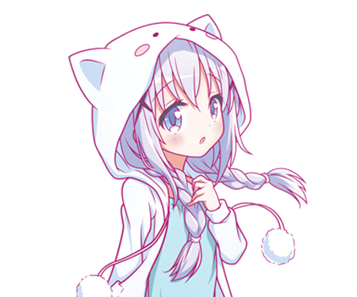
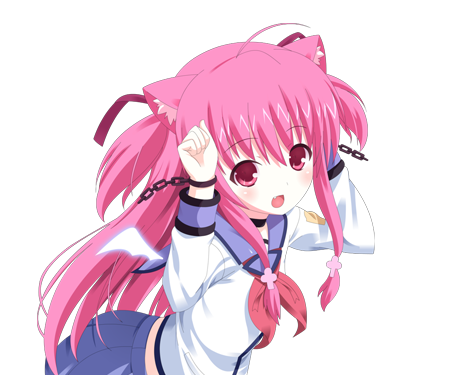
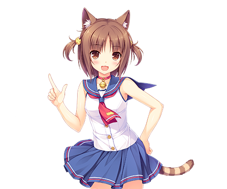
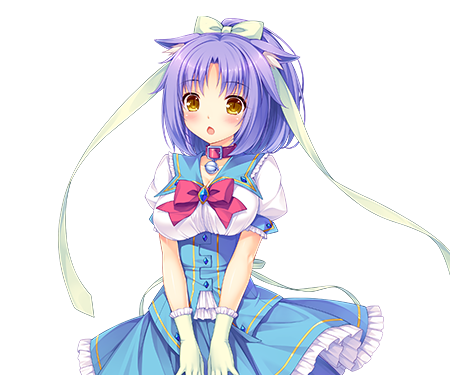
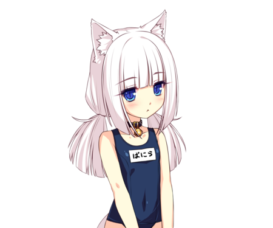
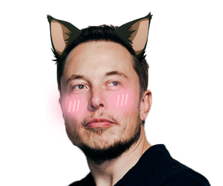
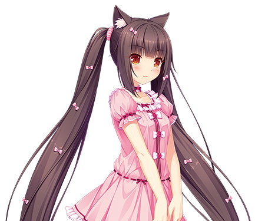

Аяко
- Age :18 лет
- Kind :Nekochan-maid
- Diseases :Здорова
Может и любит убиратся. Ест мало, моет чисто, быстро. В общении открыта. Любит лапшу.


Юи
- Age :18 лет
- Kind :Nekochan-sailor
- Diseases :Морская болезнь
Она морячка, по крайней мере у нее есть костюм.
Инструкция по применениию: забирать на свое судно, кормить до отвала. По утрам не будить.

Аооооооооооооооооооооооооой
- Age :18 лет
- Kind :Nekochan-swimmer
- Diseases :Бронхит, болеет без сестры Шизуки
Без Шизуки не может прожить не минуты, забирать строго парой.

Иоко
- Age :18 лет
- Kind :Nekochan-sailor
- Diseases :Морская болезнь
Вторая морячка в нашем приюте, служила на подводной лодке в течении 20 последних лет.
Нашли на береге после прибоя. Жива, но к воде больше не подходит.

Мичико
- Age :18 лет
- Kind :Nekochan-maid
- Diseases :Обсцессивно-компульсивное расстройство
Плохая в качестве уборки, не рекомендую, пустит под откос ваше домашнее хозяйство.

Шизука
- Age :18 лет
- Kind :Nekochan-swimmer
- Diseases :Болеет без сестры Аой
Не разлучать с Аой. Иначе плохо.

Маск-сан
- Age :47 лет
- Kind :Nekochan-favourite
- Diseases :Heroes never dies
Миллионер, плейбой, филантроп, герой нашего времени. Не отдам, просто на показ стоит.

Цую
- Age :18 лет
- Kind :Nekochan-long-haired
- Diseases :Love hurts
Волосы мыть два раза в сутки, исключительно хозяйственным мылом.